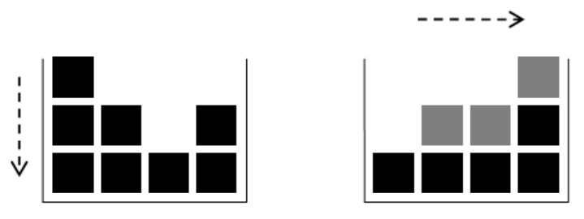
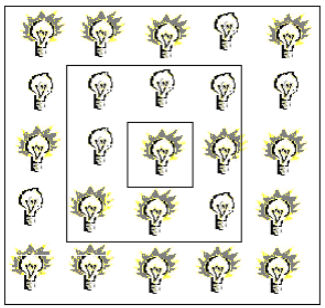

Programación 2
Lic. Rodrigo Albano

Licenciado en Sistemas - Universidad ORT
CGO - GlobalUY


Evaluaciones
| Instancia | Mínimo | Máximo |
|---|---|---|
| Parcial 1 | 0 | 15 |
| Parcial 2 | 20 | 40 |
| Obligatorio 1 - Sin defensa (2 integrantes) | 0 | 20 |
| Obligatorio 2 (2 integrantes) | 10 | 25 |
Para aprobar se deben obtener 70 o más puntos y superar los mínimos requeridos. Para exonerar se deben obtener 86 o más puntos y superar los mínimos requeridos.
OnBoarding
Desarrollo del Curso
- Objetivos del Curso
- Ejercicios Pseudocódigo
- PR1 - Introducción a JAVA y Codificaciones Básicas
- Arrays
- Matrices
- Usos de clases standard: String - Math
- Ejercicios de Parcial 1
- Objetos (básico)
- Relaciones entre clases
- ArrayList
- CRH, Diseño
- Interfaz gráfica
- Persistencia
- Archivos de texto
- Ejercicios de Parcial 2
Objetivos del Curso
- Continuar la formación en el área de programación, con fuerte énfasis en la programación orientada a objetos y en algoritmia más avanzada
- Desarrollar aplicaciones orientadas a objetos
Implica:
- Conocer y comprender los principales conceptos de la programación orientada a objetos
- Programar aplicaciones de forma robusta, correcta y eficiente con enfoque de orientación a objetos
Relación Teórico - Práctico
- El práctico está desfasado del teórico para que primero se puedan ver los conceptos y luego en práctico ser aplicados
Ejercicios de Pseudocódigo
Se tiene información sobre el estado de la conexión WIFI en 100 plazas del país.
De cada una de los 100 plazas se ingresará el estado de la conexión (“Bueno”, “Regular”, “Malo”). Asumir no hay errores en el ingreso.
Luego del ingreso de todos los datos, indicar cuántas plazas hay en cada estado y si hay algún estado que supere en cantidad a cada uno de los otros dos o no (ej. “la cantidad de plazas en estado bueno supera a la cantidad de plazas en estado regular y supera a la cantidad de plazas en estado malo”). Ampliarlo para que si hay errores, se reingrese.
INICIO
// Inicializar contadores para cada estado de conexión
contarBueno ← 0
contarRegular ← 0
contarMalo ← 0
// Repetir el proceso para cada una de las 100 plazas
PARA i DESDE 1 HASTA 100 HACER
REPETIR
// Solicitar el estado de la conexión para la plaza
Imprimir "Ingrese el estado de la conexión (Bueno, Regular, Malo):"
estado ← LEER entradaUsuario
// Verificar si el estado ingresado es válido
SI estado ES "Bueno" ENTONCES
contarBueno ← contarBueno + 1
estadoValido ← VERDADERO
FIN SI
SI estado ES "Regular" ENTONCES
contarRegular ← contarRegular + 1
estadoValido ← VERDADERO
FIN SI
SI estado ES "Malo" ENTONCES
contarMalo ← contarMalo + 1
estadoValido ← VERDADERO
FIN SI
// Si el estado ingresado no es válido, mostrar mensaje de error
SI estadoValido ES FALSO ENTONCES
Imprimir "Estado inválido, por favor ingrese 'Bueno', 'Regular' o 'Malo'."
FIN SI
HASTA QUE estadoValido ES VERDADERO
FIN PARA
// Mostrar la cantidad de plazas en cada estado
Imprimir "Cantidad de plazas en estado Bueno: ", contarBueno
Imprimir "Cantidad de plazas en estado Regular: ", contarRegular
Imprimir "Cantidad de plazas en estado Malo: ", contarMalo
// Verificar si algún estado supera a los otros dos
SI contarBueno > contarRegular Y contarBueno > contarMalo ENTONCES
Imprimir "La cantidad de plazas en estado Bueno supera a la cantidad de plazas en estado Regular y Malo."
FIN SI
SI contarRegular > contarBueno Y contarRegular > contarMalo ENTONCES
Imprimir "La cantidad de plazas en estado Regular supera a la cantidad de plazas en estado Bueno y Malo."
FIN SI
SI contarMalo > contarBueno Y contarMalo > contarRegular ENTONCES
Imprimir "La cantidad de plazas en estado Malo supera a la cantidad de plazas en estado Bueno y Regular."
FIN SI
// Si ningún estado supera a los otros dos
SI (contarBueno = contarRegular) O (contarBueno = contarMalo) O (contarRegular = contarMalo) O (contarBueno = contarRegular = contarMalo) ENTONCES
Imprimir "No hay ningún estado que supere a cada uno de los otros dos."
FIN SI
FIN
Se tiene información de los recorridos de los monopatines eléctricos. Hasta que el usuario lo indique, se ingresará número de monopatín (se asume positivo).
Debe verificarse que cada número sea mayor que el previo. Si no está correcto, se vuelve a solicitar el dato hasta que lo esté.
Por cada número de monopatín, se ingresa la cantidad de usos que tuvo ese monopatín y el total de km recorridos.
Al final del proceso de todos los datos, mostrar el total de km entre los monopatines que fueron usados más de 20 veces.
INICIO
// Inicializar variables
numeroMonopatinPrevio ← 0
totalKmMasDe20Usos ← 0
continuarIngreso ← VERDADERO
MIENTRAS continuarIngreso ES VERDADERO HACER
// Solicitar y validar el número de monopatín
REPETIR
Imprimir "Ingrese el número de monopatín (positivo y mayor que el anterior):"
numeroMonopatin ← LEER entradaUsuario
SI numeroMonopatin > numeroMonopatinPrevio ENTONCES
numeroValido ← VERDADERO
SINO
Imprimir "Número inválido. Debe ser mayor que el número de monopatín anterior."
numeroValido ← FALSO
FIN SI
HASTA QUE numeroValido ES VERDADERO
// Actualizar el número de monopatín previo
numeroMonopatinPrevio ← numeroMonopatin
// Solicitar la cantidad de usos y los km recorridos
Imprimir "Ingrese la cantidad de usos del monopatín:"
cantidadUsos ← LEER entradaUsuario
Imprimir "Ingrese el total de km recorridos por el monopatín:"
kmRecorridos ← LEER entradaUsuario
// Si el monopatín fue usado más de 20 veces, acumular sus km recorridos
SI cantidadUsos > 20 ENTONCES
totalKmMasDe20Usos ← totalKmMasDe20Usos + kmRecorridos
FIN SI
// Preguntar al usuario si desea continuar ingresando datos
Imprimir "¿Desea ingresar otro monopatín? (S/N):"
respuesta ← LEER entradaUsuario
SI respuesta = "N" O respuesta = "n" ENTONCES
continuarIngreso ← FALSO
FIN SI
FIN MIENTRAS
// Mostrar el total de km entre los monopatines usados más de 20 veces
Imprimir "El total de km recorridos por los monopatines usados más de 20 veces es:", totalKmMasDe20Usos
FIN
María inventó un nuevo juego simple: lanzar una pelota de manera que caiga en un hoyo que está ubicado d metros más adelante.
Cuando se lanza la pelota a una velocidad entera E, permanece en el aire durante E metros y luego toca el suelo. Repite este proceso E veces. Después de tocar el suelo E veces, cambia su velocidad a E-1 y el proceso anterior se repite, hasta que la velocidad es igual a 0.
Por ejemplo, si la pelota se lanza a una velocidad E igual a 3, tocará el suelo en los siguientes puntos: 3, 6, 9, 11, 13, 14 (hacer dibujo). Si el hoyo está en alguno de ellos, la pelota caerá dentro.
Leer la velocidad E y la distancia d al hoyo y muestre si es posible que al lanzar la pelota caiga en el hoyo o no.
EJ: Si la velocidad es 3 y la distancia es 14, muestra SI, Si la velocidad es 3 y la distancia es 18, muestra NO, Si la velocidad es 3 y la distancia es 13, muestra SI, Si la velocidad es 3 y la distancia es 12, muestra NO, Si la velocidad es 3 y la distancia es 6 muestra SI; Si la velocidad es 3 y la distancia es 5, muestra NO; Si la velocidad es 5 y la distancia es 2, muestra NO; Si la velocidad es 10 y la distancia es 40, muestra SI
INICIO
// Leer la velocidad inicial E y la distancia d al hoyo
Imprimir "Ingrese la velocidad inicial E:"
E ← LEER entradaUsuario
Imprimir "Ingrese la distancia d al hoyo:"
d ← LEER entradaUsuario
// Inicializar variables
posicion ← 0
esPosible ← FALSO
// Ciclo para simular el movimiento de la pelota
MIENTRAS E > 0 HACER
// La pelota se mueve E metros E veces
PARA i DESDE 1 HASTA E HACER
posicion ← posicion + E
// Verificar si la pelota cae en el hoyo
SI posicion = d ENTONCES
esPosible ← VERDADERO
SALIR DEL CICLO // Termina la simulación si ya cayó en el hoyo
FIN SI
FIN PARA
// Reducir la velocidad de la pelota
E ← E - 1
FIN MIENTRAS
// Mostrar si la pelota cae en el hoyo o no
SI esPosible ENTONCES
Imprimir "SI"
SINO
Imprimir "NO"
FIN SI
FIN
Aceptar un número entero positivo N y determinar si el mismo es un número primo. Desplegar por pantalla si es un número primo o compuesto, en este último caso desplegar en pantalla todos sus divisores.
Un número es primo si y sólo si es divisible únicamente entre 1 y si mismo. Por lo cual un número compuesto será todo aquel número divisible por algún otro número.
Ejemplo: N = 50 muestra en pantalla: Es compuesto, divisores 2, 5, 10, 25 (en ese orden o al reves)
INICIO
// Leer el número entero positivo N
Imprimir "Ingrese un número entero positivo N:"
N ← LEER entradaUsuario
// Inicializar variables
esPrimo ← VERDADERO
divisores ← Lista vacía
// Verificar si N es primo o compuesto
PARA i DESDE 2 HASTA N-1 HACER
SI N MOD i = 0 ENTONCES
esPrimo ← FALSO
AGREGAR i A divisores
FIN SI
FIN PARA
// Mostrar el resultado
SI esPrimo ENTONCES
Imprimir "Es primo."
SINO
Imprimir "Es compuesto, divisores:", divisores
FIN SI
FIN
Leer 3 numeros positivos y determinar si pueden ser la longitud de los lados de un triángulo.
De serlo, determinar si se trata de un triángulo rectángulo.
Nota: La suma de las longitudes de dos lados de un triángulo no puede ser menor que la longitud del tercero.
Para que un triángulo sea rectángulo la suma de los cuadrados de los catetos es igual a la suma del cuadrado de la hipotenusa.
INICIO
// Leer los tres números positivos a, b, c
Imprimir "Ingrese el primer número positivo a:"
a ← LEER entradaUsuario
Imprimir "Ingrese el segundo número positivo b:"
b ← LEER entradaUsuario
Imprimir "Ingrese el tercer número positivo c:"
c ← LEER entradaUsuario
// Verificar si pueden ser los lados de un triángulo
SI a + b > c Y a + c > b Y b + c > a ENTONCES
Imprimir "Los números pueden ser los lados de un triángulo."
// Determinar si es un triángulo rectángulo
// Ordenar los lados para identificar la hipotenusa
SI a^2 + b^2 = c^2 O a^2 + c^2 = b^2 O b^2 + c^2 = a^2 ENTONCES
Imprimir "Es un triángulo rectángulo."
SINO
Imprimir "No es un triángulo rectángulo."
FIN SI
SINO
Imprimir "Los números no pueden ser los lados de un triángulo."
FIN SI
FIN
PR 1
Introducción a Java y Codificación Básica
Dadas 3 variables: a=8, b=3, c=-5. Determinar el valor de las siguientes expresiones aritméticas
- a + b + c
- 2 * b + 3 * (a – c)
- a / b
- a % b
- a / c
- a % c
- a * b / c
- a * (b / c)
- (a * c) % b
- a * (c % b)
- (3 * a – 2 * b) % (2 * a – c)
- 2 * ( a / 5 + (4 - b * 3)) % (a + c - 2)
- (a - 3 * b) % (c + 2 * a) / (a - c)
- a - b - c * 2
- a + b + c = 6
- 2 * b + 3 * (a – c) = 45
- a / b = 2
- a % b = 2
- a / c = -1
- a % c = 3
- a * b / c = -4
- a * (b / c) = 0
- (a * c) % b = -1
- a * (c % b) = -16
- (3 * a – 2 * b) % (2 * a – c) = 18
- 2 * (a / 5 + (4 - b * 3)) % (a + c - 2) = 0
- (a - 3 * b) % (c + 2 * a) / (a - c) = 0
- a - b - c * 2 = 15
Dadas las variables booleanas w = false, x = true, y = true, z = false, determinar el valor de las siguientes expresiones lógicas:
- w || y && x && w || z
- x && !y && !x || !w && y
- !(w || !y) && x || z
- x && y && w || z || x
- y || !(y || z && w)
- !x && y && (!z || !x)
Realizar un programa que pida el nombre, edad y salario de un funcionario y muestra el nombre y el salario total a cobrar. Se debe verificar que la edad sea mayor o igual a 18. Si no es así, reingresarla hasta que esté en el rango
El salario total se calcula:
- De 18 a 50 años el total es un 5 por ciento más
- De 51 a 60 años el total es un 10 por ciento más
- Si es mayor de 60 el total es un 15 por ciento más
public static void ejercicio3() {
Scanner in = new Scanner(System.in);
System.out.println("Ingrese el nombre del funcionario: ");
String nombre = in.nextLine();
System.out.println("Ingrese la edad del funcionario: ");
int edad = in.nextInt();
while (edad < 18) {
System.out.println("Edad incorrecta (debe ser mayor de 18 años). Por favor reingrese");
edad = in.nextInt();
}
System.out.println("Ingrese el sueldo: ");
int sueldo = in.nextInt();
double nuevoSueldo;
if (edad <= 50) {
nuevoSueldo = sueldo * 1.05;
} else {
if (edad <= 60) {
nuevoSueldo = sueldo * 1.10;
} else {
nuevoSueldo = sueldo * 1.15;
}
}
System.out.println("El nuevo sueldo del funcionario es: " + nuevoSueldo);
}
Pedir el ingreso de 10 números y mostrar la suma de ellos.
public static void ejercicio4() {
Scanner in = new Scanner(System.in);
System.out.println("Se pedirá el ingreso de 10 números");
System.out.println("Al terminar mostraremos la suma de todos ellos");
int suma = 0;
int numero;
for (int i = 1; i <= 10; i++) {
System.out.println("Ingrese el número " + i);
numero = in.nextInt();
suma += numero;
}
System.out.println("La suma total es: " + suma);
}
Ingresar una cantidad de grados centígrados y mostrarlos en Fahrenheit. La fórmula es:
F = 32 + (9 * C / 5)
public static void ejercicio5() {
Scanner in = new Scanner(System.in);
System.out.println("Convertidor de temperatura");
System.out.println("Ingrese un valor en grados centígrados");
float valor = in.nextInt();
float valorF = 32 + (9 * valor / 5);
System.out.println("El equivalente en grados Farenheit es: " + valorF);
}
Leer una velocidad en Km/h y mostrarla en m/s
public static void ejercicio6() {
Scanner in = new Scanner(System.in);
System.out.println("Convertidor de velocidad");
System.out.println("Ingrese una velocidad en Km por hora");
float velocidadKH = in.nextInt();
float velocidadMS = velocidadKH * 1000 / 3600;
System.out.println("Esa velocidad es equivalente a: " + velocidadMS + " metros por segundo");
}
Leer un número de 3 cifras y mostrar sus dígitos
public static void ejercicio7() {
Scanner in = new Scanner(System.in);
System.out.println("Ingrese un número");
int numero = in.nextInt();
while (numero != 0) {
System.out.println("Dígito: " + numero % 10);
numero = numero / 10;
}
}
Imprimir 10, 20, ..., 1000. Diseñar soluciones diferentes utilizando: for, while, do while
public static void ejercicio8() {
int i;
// Utilizando for
for (i = 1; i <= 100; i++) {
System.out.println(i * 10);
} // podría también incrementarse da a 10
// Utilizando while
i = 1;
while (i <= 100) {
System.out.println(i * 10);
i++;
}
// Utilizando do .. while
i = 1;
do {
System.out.println(i * 10);
i++;
} while (i <= 100);
}
Pedir el ingreso de 10 números e indicar la suma de los pares y la de los impares
public static void ejercicio9() {
Scanner in = new Scanner(System.in);
System.out.println("Se pedirá el ingreso de 10 números");
int sumaPares = 0;
int sumaImpares = 0;
int numero;
for (int i = 1; i <= 10; i++) {
System.out.println("Ingrese el número " + i);
numero = in.nextInt();
if (numero % 2 == 0) {
sumaPares += numero;
} else {
sumaImpares += numero;
}
}
System.out.println("Suma de los números pares: " + sumaPares);
System.out.println("Suma de los números impares: " + sumaImpares);
}
Anotar 4 enunciados diferentes en Java que sumen 1 a la variable entera i
Ingresar la hora y minutos de entrada de un funcionario a la empresa, también la hora y minutos de salida.
Indicar la cantidad de horas y minutos que trabajó.
Se asume que el funcionario entra y sale durante el mismo día
public static void ejercicio11() {
Scanner in = new Scanner(System.in);
System.out.println("Horario de Entrada: ");
System.out.println("Hora: ");
int horaE = in.nextInt();
System.out.println("Minutos: ");
int minutoE = in.nextInt();
System.out.println("Horario de Salida: ");
System.out.println("Hora: ");
int horaS = in.nextInt();
System.out.println("Minutos: ");
int minutoS = in.nextInt();
// Paso todo a minutos
int entradaMinutos = horaE * 60 + minutoE;
int salidaMinutos = horaS * 60 + minutoS;
int minutosTrabajados = salidaMinutos - entradaMinutos;
System.out.println("Trabajó en total " + (minutosTrabajados / 60)
+ " horas y " + minutosTrabajados % 60 + " minutos");
}
Jugar a “Piedra” “Papel” o “Tijera”
Cada usuario ingresa el número de opción: 1: Piedra, 2: Papel, 3: Tijera y el programa debe indicar si gana el primer jugador, el segundo o es empate.
La piedra le gana a la tijera, el papel le gana a la piedra y la tijera le gana al papel
public static void ejercicio12() {
Scanner in = new Scanner(System.in);
System.out.println("Piedra, papel o tijera");
System.out.println("Jugador 1: (1 piedra, 2 papel, 3 tijera");
int jugada1 = in.nextInt();
System.out.println("Jugador 2: (1 piedra, 2 papel, 3 tijera");
int jugada2 = in.nextInt();
if ((jugada1 == 1 && jugada2 == 3) || (jugada1 == 2 && jugada2 == 1)
|| (jugada1 == 3 && jugada2 == 2)) {
System.out.println("Ganó el jugador 1");
} else {
if (jugada1 == jugada2) {
System.out.println("Han empatado");
} else {
System.out.println("Ganó el jugador 2");
}
}
}
PR 2
Arrays, uso de métodos static
Ingresar un array de valores positivos. Mostrar como histograma los datos del array. Ej: (5,4,1,2) desplegaría:
5 *****
4 ****
1 *
2 **
public static void ejercicio1() {
Scanner in = new Scanner(System.in);
System.out.println("Ingrese la cantidad de elementos del array");
int cantidad = in.nextInt();
int[] datos = new int[cantidad];
System.out.println("Ingrese los elementos del array");
for (int i = 0; i < cantidad; i++) {
System.out.println("Elemento " + (i + 1) + ": ");
datos[i] = in.nextInt();
}
System.out.println("Histograma");
for (int i = 0; i < datos.length; i++) {
System.out.print(datos[i] + ": ");
for (int j = 0; j < datos[i]; j++) {
System.out.print("*");
}
System.out.println("");
}
}
Leer 10 números y mostrarlos en orden inverso al ingresado.
public static void ejercicio2() {
Scanner in = new Scanner(System.in);
int[] datos = new int[10];
System.out.println("Ingrese los elementos del array");
for (int i = 0; i < 10; i++) {
System.out.println("Elemento " + (i + 1) + ": ");
datos[i] = in.nextInt();
}
System.out.println("En orden inverso");
for (int i = 9; i >= 0; i--) {
System.out.print(datos[i] + " ");
}
System.out.println("");
}
Leer 10 números. Al final indicar si están ordenados ascendentemente, descendentemente o no ordenados
public static void ejercicio3() {
Scanner in = new Scanner(System.in);
int[] datos = new int[10];
System.out.println("Ingrese los elementos del array");
for (int i = 0; i < 10; i++) {
System.out.println("Elemento " + (i + 1) + ": ");
datos[i] = in.nextInt();
}
boolean ascendente = true;
boolean descendente = true;
int anterior = datos[0];
for (int i = 1; i < 10; i++) {
if (datos[i] < anterior) {
ascendente = false;
}
if (datos[i] > anterior) {
descendente = false;
}
anterior = datos[i];
}
if (ascendente) {
System.out.println("Orden ascendente");
} else {
if (descendente) {
System.out.println("Orden descendente");
} else {
System.out.println("Sin orden");
}
}
}
Escribir un método que permita evaluar un polinomio p(x) de la forma:
\( p(x) = a_0 + x(a_1 + x(a_2 + \ldots x(a_{n-1} + x a_n)\ldots)) \)
suponiendo que los coeficientes reales ai (i = 0,1, 2,…,.n), el entero n y el punto a evaluar son datos entrados inicialmente por el usuario
public static void ejercicio4() {
Scanner in = new Scanner(System.in);
System.out.println("Ingrese n");
int n = in.nextInt();
int[] datos = new int[n + 1];
System.out.println("Ingrese los coeficientes");
for (int i = 0; i <= n; i++) {
System.out.println("Coeficiente a" + i + ": ");
datos[i] = in.nextInt();
}
System.out.println("Ingrese punto a evaluar");
int x = in.nextInt();
int resultado = datos[datos.length - 1];
for (int i = datos.length - 2; i >= 0; i--) {
resultado = resultado * x + datos[i];
}
System.out.println("Resultado: " + resultado);
}
Dados dos arrays ordenados, generar un tercer array con el resultado de la intercalación ordenada.
Ej: [10, 20, 50], [1, 2, 20, 24, 80], resultado: [1, 2, 10, 20, 20, 24, 50, 80]
public static int[] ejercicio5(int[] lista1, int[] lista2) {
int[] resultado = new int[lista1.length + lista2.length];
int pos1 = 0;
int pos2 = 0;
for (int i = 0; i < resultado.length; i++) {
if ((pos1 < lista1.length && pos2 < lista2.length && lista1[pos1] < lista2[pos2])
|| pos2 >= lista2.length) {
resultado[i] = lista1[pos1];
pos1++;
} else {
resultado[i] = lista2[pos2];
pos2++;
}
}
return resultado;
}
Cargar un array de 10 elementos con números aleatorios entre 1 y 20. Asegurarse que no haya números repetidos
public static void ejercicio6() {
int[] datos = new int[10];
int cantidadPuestos = 0;
while (cantidadPuestos < 10) {
boolean iguales = false;
// Genero numero
int numero = (int) (Math.random() * 20 + 1);
for (int i = 0; i < datos.length && !iguales; i++) {
if (datos[i] == numero) {
iguales = true;
}
}
if (!iguales) {
datos[cantidadPuestos] = numero;
cantidadPuestos++;
}
}
System.out.println("Array resultante");
for (int i = 0; i < 10; i++) {
System.out.print(datos[i] + " ");
}
}
“En la casa de Pinocho...todos cuentan hasta ocho:...pinuno, pindos, pintres, pincuatro, pincinco, pinseis, pinsiete, pinocho!.”
Este tradicional cantito es el que usan los niños para elegir al azar uno de ellos en un grupo. Los niños se disponen en círculo y el responsable del canto, ubicado en el centro del círculo, va señalando consecutivamente a cada uno diciendo en voz alta una palabra del canto. Al que le toca la última palabra de la canción es el elegido. Se ingresará desde teclado una lista de nombres (entre 5 y 30), luego que se termina la lista se indica cuál va a cantar al centro y desde cuál se comienza. El programa debe informar a quién se elegirá
Ej:
Se ingresan: Nicolás Andrés Mariana Inés Marcelo Matías Mauricio Daniel. Mariana cantará y se comienza con Matías. El programa debe indicar que el elegido será Daniel.
public static void ejercicio7() {
Scanner in = new Scanner(System.in);
System.out.println("Ingrese Cantidad de nombres");
int cantidad = in.nextInt();
in.nextLine();
String[] datos = new String[cantidad];
System.out.println("Ingrese los nombres");
for (int i = 0; i < cantidad; i++) {
System.out.println("Nombre: " + (i + 1) + ": ");
datos[i] = in.nextLine();
}
System.out.println("Ingrese posición de quién canta");
int canta = in.nextInt();
System.out.println("Ingrese posición de inicio");
int inicio = in.nextInt();
// La canción tiene 17 palabras, comienza en inicio-1 para contar
// al primero que se elige
int posicion = inicio - 1;
for (int i = 1; i <= 17; i++) {
if (posicion < datos.length - 1) {
posicion++;
} else {
posicion = 0;
}
if (posicion == canta) {
posicion++;
}
}
System.out.println("Se elige a: " + datos[posicion]);
}
Marcos, distraído en la clase de física, se imagina cómo sería cambiar la gravedad. Diseñó una caja especial que contiene n columnas de cubitos. La columna i contiene ai cubos. Al principio, la gravedad en la caja es normal, o sea, empujando los cubos hacia abajo, pero cuando cambia la gravedad los empuja hacia la derecha.
En la imagen de la izquierda está la caja con la gravedad normal con 4 columnas. En la imagen de la derecha, al cambiar la gravedad, se desplazan los cubos en gris. A partir de la configuración inicial de los cubos, el objetivo es encontrar la cantidad de cubos en cada una de las columnas luego del cambio de gravedad.
Implementar un método que recibe un array con la cantidad de cubos en cada una de las columnas e imprime la cantidad de cubos de cada columna luego del cambio de gravedad.
Ejemplo: recibe 3 2 1 2, imprime 1 2 2 3. La firma es: public static void gravedad(int[] datos)
public static void ejercicio8() {
int[] datos = {3, 2, 1, 2};
// El efecto de la nueva gravedad es ordenar los cubos de menor a mayor
int minimo;
int posMinimo = 0;
int[] nueva = new int[datos.length];
for (int i = 0; i < datos.length; i++) {
minimo = Integer.MAX_VALUE;
for (int j = 0; j < nueva.length; j++) {
if (datos[j] < minimo) {
minimo = datos[j];
posMinimo = j;
}
}
nueva[i] = minimo;
datos[posMinimo] = Integer.MAX_VALUE;
}
System.out.println("Array resultante");
for (int i = 0; i < nueva.length; i++) {
System.out.print(nueva[i] + " ");
}
}
Anita colecciona tarjetas numeradas de Los Simpson. Como es muy generosa, quiere regalarle una tarjeta a cada una de sus tres amigas. Sus tres amigas son especiales y requieren que, cuando se les regale una tarjeta, se cumpla que:
a) Cada par de amigas no pueden recibir el mismo número de tarjeta
b) Los números de las tarjetas recibidas entre cada par de amigas no pueden diferir en más de 2
Por ejemplo, Anita tiene las tarjetas 4, 5, 3, 90, 5, 5, 91 y 93. No podría regalarles las tarjetas 5, 5 y 4, porque rompería la primera regla. Tampoco podría regalarles las tarjetas 90, 91 y 93 porque rompería la segunda regla. Ayudemos a Anita a verificar si puede elegir, o no, 3 de sus tarjetas que cumplan las reglas.
Implementar un método que reciba en un array con los datos de las tarjetas y retorna verdadero si puede elegir 3 tarjetas que cumplan las reglas. Como máximo hay 50 tarjetas, cada una entre 1 y 1000. La firma es: public static boolean amigas(int[] tarjetas)
public static boolean ejercicio9() {
int[] tarjetas = { 18, 55, 16, 17 };
Arrays.sort(tarjetas);
boolean puede = false;
for (int i = 0; i < tarjetas.length - 2 && !puede; i++) {
if (tarjetas[i] == tarjetas[i + 1] - 1 && tarjetas[i] == tarjetas[i + 2] - 2) {
puede = true;
}
}
return puede;
}
public static boolean amigasSinSort(int[] tarjetas) {
boolean puede = false;
for (int i = 0; i < tarjetas.length - 2 && !puede; i++) {
for (int j = i + 1; j < tarjetas.length - 1 && !puede; j++) {
for (int k = j + 1; k < tarjetas.length && !puede; k++) {
if (tarjetas[i] != tarjetas[j] && tarjetas[i] != tarjetas[k] && tarjetas[j] != tarjetas[k]) {
if ((Math.abs(tarjetas[i] - tarjetas[j]) == 1 || Math.abs(tarjetas[i] - tarjetas[k]) == 1)
&& (Math.abs(tarjetas[j] - tarjetas[i]) == 1 || Math.abs(tarjetas[j] - tarjetas[k]) == 1)
&& (Math.abs(tarjetas[k] - tarjetas[i]) == 1 || Math.abs(tarjetas[k] - tarjetas[j]) == 1)) {
puede = true;
}
}
}
}
}
return puede;
}
¡El pez grande se come al pez chico! En este juego, se tiene un conjunto de 9 peces, cada uno de un tamaño diferente de 1 a 9. Están en una fila. Cada pez puede comerse exclusivamente el pez vecino a su derecha siempre y cuando sea menor que él. Se pide indicar cuál es el largo máximo de la secuencia de peces que pueden ser comidos. La firma es: public static int comidos(int[] peces).
Ej: Se recibe el array con 9 enteros (de 1 a 9 diferentes): 8 9 6 5 3 1 4 2 7, debe retornar 4. Si se recibe: 1 2 3 4 5 6 7 8 9, debe retornar 0. Si se recibe: 6 1 5 4 3 2 9 8 7, debe retornar 3.
public static int ejercicio10(int[] peces) {
int cantidad = 0;
int maximo = 0;
for (int i = 0; i < peces.length - 1; i++) {
if (peces[i] > peces[i + 1]) {
cantidad++;
maximo = Math.max(maximo, cantidad);
} else {
cantidad = 0;
}
}
return maximo;
}
PR 3
Matrices
Implementar un método que recibe una matriz que corresponde a las notas de 30 alumnos en 6 materias y retorna el promedio general de calificaciones (considerando los 6 exámenes). public static int promedioGeneral(int[][] notas)
public static int promedioGeneral(int[][] notas) {
int suma = 0;
for (int i = 0; i < notas.length; i++) {
for (int j = 0; j < notas[0].length; j++) {
suma += notas[i][j];
}
}
return suma / 180;
}
Dada una matriz rectangular, retornar un array que contenga la suma de sus columnas. Encabezado: public static int[] sumas(int[][] mat)
Ejemplo: dada la matriz
3 5
2 4
-1 -2
-1 8
Retorna 3 15
public static int[] sumas(int[][] mat) {
int[] resultado = new int[mat[0].length];
for (int i = 0; i < mat.length; i++) {
for (int j = 0; j < mat[0].length; j++) {
resultado[j] += mat[i][j];
}
}
return resultado;
}
Se desea implementar un método que detecte si una matriz es “especial”. Una matriz es especial si se cumplen estas propiedades:
- la suma de todos los valores de una fila, es la misma para todas las filas.
- la suma de todos los valores de una columna, es la misma para todas las columnas.
- las dos sumas anteriores son iguales entre sí y además es igual a la suma de los valores de la diagonal principal.
Ej: La siguiente matriz es "especial"
| 1 | 2 | 3 |
| 4 | 2 | 0 |
| 1 | 2 | 3 |
public static boolean esEspecial(int[][] mat) {
int[] filas = new int[mat.length];
int[] columnas = new int[mat.length];
int diagonal = 0;
for (int i = 0; i < columnas.length; i++) {
diagonal += mat[i][i];
for (int j = 0; j < columnas.length; j++) {
filas[i] += mat[i][j];
columnas[j] += mat[i][j];
}
}
boolean especial = true;
for (int i = 0; i < filas.length; i++) {
if (filas[i] != diagonal) {
especial = false;
}
if (columnas[i] != diagonal) {
especial = false;
}
}
return especial;
}
Dada una matriz y una posición en esa matriz (dada por la fila y la columna) indicar si el elemento que se encuentra en esa posición está repetido o no en alguna de las diagonales que pasan por esa posición. public static boolean repetidos(int[][] mat, int fila, int col)
| 1 | 1 | 5 | 1 | 1 |
| 1 | 1 | 1 | 1 | 1 |
| 5 | 1 | 1 | 1 | 1 |
| 1 | 1 | 1 | 1 | 1 |
| 1 | 1 | 1 | 1 | 1 |
| 1 | 1 | 1 | 1 | 1 |
| 1 | 1 | 5 | 1 | 1 |
Si se consulta el elemento de fila 2 y columna 1, devuelve true.
Si se consultara el elemento fila 6 columna 2, devolvería false.
public static boolean repetidos(int[][] mat, int fila, int col) {
boolean repetido = false;
int valor = mat[fila][col];
// Abajo derecha
int i = fila + 1;
int j = col + 1;
while (i < mat.length && j < mat[0].length && !repetido) {
if (mat[i][j] == valor) {
repetido = true;
}
i++;
j++;
}
// Abajo izquierda
i = fila + 1;
j = col - 1;
while (i < mat.length && j >= 0 && !repetido) {
if (mat[i][j] == valor) {
repetido = true;
}
i++;
j--;
}
// Arriba derecha
i = fila - 1;
j = col + 1;
while (i >= 0 && j < mat[0].length && !repetido) {
if (mat[i][j] == valor) {
repetido = true;
}
i--;
j++;
}
// Arriba izquierda
i = fila - 1;
j = col - 1;
while (i >= 0 && j >= 0 && !repetido) {
if (mat[i][j] == valor) {
repetido = true;
}
i--;
j--;
}
return repetido;
}
Se recibe un mapa en una matriz rectangular de hasta 100 * 100. Representa a una única isla, donde 1 representa tierra y 0 representa agua. Las posiciones de tierra están conectadas horizontal/verticalmente. La isla está completamente rodeada de agua. Cada posición tiene lado 1. Determinar el perímetro de la isla.
| 0 | 1 | 0 | 0 |
| 1 | 1 | 1 | 0 |
| 0 | 1 | 0 | 0 |
| 1 | 1 | 0 | 0 |
Ejemplo: para la figura, el perímetro es 16.
public static int calcularPerimetro(int[][] mat) {
int perimetro = 0;
for (int i = 0; i < mat.length; i++) {
for (int j = 0; j < mat[0].length; j++) {
if (mat[i][j] == 1) {
// arriba
if (i == 0) {
perimetro++;
} else {
if (mat[i - 1][j] == 0) {
perimetro++;
}
}
// abajo
if (i == mat.length - 1) {
perimetro++;
} else {
if (mat[i + 1][j] == 0) {
perimetro++;
}
}
// izquierda
if (j == 0) {
perimetro++;
} else {
if (mat[i][j - 1] == 0) {
perimetro++;
}
}
// derecha
if (j == mat[0].length - 1) {
perimetro++;
} else {
if (mat[i][j + 1] == 0) {
perimetro++;
}
}
}
}
}
return perimetro;
}
Dada una matriz cualquiera, retornar la matriz acumulada. La matriz acumulada es el resultado de ir sumando los elementos de la matriz de esta manera:
Original
| 5 | 8 | 1 |
| 4 | 8 | 10 |
Resultado
| 5 | 5 + 8 | (5 + 8) + 1 |
| (5 + 8 + 1) + 4 | (5 + 8 + 1 + 4) + 8 | (5 + 8 + 1 + 4 + 8) + 10 |
| 5 | 13 | 14 |
| 18 | 26 | 36 |
Firma: public static int[][] acumulada(int[][] mat)
public static int[][] acumulada(int[][] mat) {
int[][] acum = new int[mat.length][mat[0].length];
int anterior = 0;
for (int i = 0; i < acum.length; i++) {
for (int j = 0; j < acum[0].length; j++) {
acum[i][j] = anterior + mat[i][j];
anterior = acum[i][j];
}
}
return acum;
}
Se tiene un tiro al blanco electrónico. Inicialmente, están todas las luces apagadas. Al disparar con un láser y acertar, se enciende la respectiva luz y queda prendida. Se desea un programa que, a partir de la matriz con la información de cuáles sensores están prendidos o apagados, calcule el puntaje. El puntaje se otorga de la siguiente forma: cualquier sensor prendido del borde exterior vale 1 punto. Los del reborde inmediatamente contiguo hacia el centro valen 2 cada uno; en el siguiente reborde vale 3 cada sensor prendido y así sucesivamente incrementando de a un punto.
Ejemplo: en el tablero cuadrado de lado 5 del dibujo, se obtuvieron 21 puntos que corresponden 12 puntos por 12 sensores prendidos del borde exterior, 6 puntos por 3 sensores del 2do. reborde y 3 puntos por 1 sensor del 3er. reborde. Se recibe la matriz:
| 1 | 1 | 1 | 0 | 1 |
| 0 | 0 | 0 | 0 | 0 |
| 1 | 0 | 1 | 1 | 1 |
| 0 | 1 | 1 | 0 | 1 |
| 1 | 1 | 1 | 1 | 1 |
Retorna 21 - Firma: public static int puntaje(int[][] mat)
public static int puntaje(int[][] mat) {
int puntos = 0;
int valor = 1;
int iIni = 0;
int jIni = 0;
int iFin = mat.length - 1;
int jFin = mat.length - 1;
while (iIni != iFin) {
// recorro el borde
for (int i = jIni; i <= jFin; i++) {
if (mat[iIni][i] == 1) {
puntos += valor;
}
if (mat[iFin][i] == 1) {
puntos += valor;
}
}
for (int j = iIni + 1; j < iFin; j++) {
if (mat[j][iIni] == 1) {
puntos += valor;
}
if (mat[j][iFin] == 1) {
puntos += valor;
}
}
iIni++;
jIni++;
iFin--;
jFin--;
valor++;
}
if (mat[iFin][iFin] == 1) {
puntos += valor;
}
return puntos;
}
Una matriz es **reducida por renglones** si verifica ciertas condiciones que se definen a continuación. Se llama **elemento de pivoteo** de una fila al primer elemento diferente de cero de esa fila. Para ser reducida por renglones debe verificarse que cada columna que contiene un elemento de pivoteo tiene todos los demás elementos de la columna iguales a cero y cada elemento de pivoteo es igual a uno.
Se ingresan la cantidad de filas y de columnas. Luego viene una matriz de enteros de esa cantidad de filas y columnas. La matriz es máximo 10 * 10. Indicar "SI" si la matriz es reducida por renglones y "NO" en otro caso.
| 3 | 3 | |
| 2 | 3 | 0 |
| 0 | -4 | 0 |
| 1 | 1 | 1 |
NO es reducida
| 3 | 4 | ||
| 1 | 0 | 0 | 1 |
| 0 | 0 | 1 | 12 |
| 0 | 1 | 0 | -3 |
SI es reducida
public static boolean reducidaPorRenglones(int[][] mat) {
boolean esReducida = true;
boolean pivoteoEncontrado = false;
for (int i = 0; i < mat.length && esReducida; i++) {
for (int j = 0; j < mat[0].length && esReducida && !pivoteoEncontrado; j++) {
//Si encuentro un elemento distinto de cero, aviso que encontre el elemento de pivoteo
if (mat[i][j] != 0) {
pivoteoEncontrado = true;
//Evalúo que el elemento de pivoteo sea distinto de 1 o que el resto de los elementos de la columna no sean 0
if (mat[i][j] != 1 || !columnasSonCeros(mat, j, i)) {
esReducida = false;
}
}
}
pivoteoEncontrado = false;
}
return esReducida;
}
//Método que se encarga de revisar que los elementos de la columna sean todos cero, excepto el elemento de pivoteo
public static boolean columnasSonCeros(int[][] mat, int columna, int pivote) {
boolean resultado = true;
for (int i = 0; i < mat.length; i++) { //i representa la fila. La columna es fija
if (mat[i][columna] != 0 && i != pivote) {
resultado = false;
}
}
return resultado;
}
Descifrar una melodía oculta en una matriz de notas musicales y reproducirla usando una librería de sonido en Java.
- Leer una matriz de notas musicales.
- Usar una clave externa para extraer la melodía en el orden correcto.
- Reproducir la melodía en tiempo real usando una librería de audio.
char[][] notas = {
{'C', 'D', 'E'},
{'F', 'G', 'A'},
{'B', 'C', 'D'}
};
// Clave externa que indica el orden de lectura (fila, columna)
int[][] clave = {
{2, 2}, {2, 2}, {0, 2}, {1, 0}, {1, 1}, {1, 0}, {0, 2}, {0, 1}, {0, 0},
{0, 0}, {0, 1}, {0, 2}, {2, 2}, {0, 1}, {0, 1},
{2, 2}, {2, 2}, {0, 2}, {1, 0}, {1, 1}, {1, 0}, {0, 2}, {0, 1}, {0, 0},
{0, 0}, {0, 1}, {0, 2}, {0, 1}, {0, 0}, {0, 0}
};
import java.util.HashMap;
import java.util.InputMismatchException;
import java.util.Map;
import javax.sound.midi.*;
public static void notasMusicales() throws Exception {
char[][] notas = {
{'C', 'D', 'E'},
{'F', 'G', 'A'},
{'B', 'C', 'D'}
};
// Clave externa que indica el orden de lectura (coordenadas fila, columna)
int[][] clave = {
{2, 2}, {2, 2}, {0, 2}, {1, 0}, {1, 1}, {1, 0}, {0, 2}, {0, 1}, {0, 0},
{0, 0}, {0, 1}, {0, 2}, {2, 2}, {0, 1}, {0, 1},
{2, 2}, {2, 2}, {0, 2}, {1, 0}, {1, 1}, {1, 0}, {0, 2}, {0, 1}, {0, 0},
{0, 0}, {0, 1}, {0, 2}, {0, 1}, {0, 0}, {0, 0}
};
// Construir la melodía ordenada
char[] melodia = new char[clave.length];
for (int i = 0; i < clave.length; i++) {
int fila = clave[i][0];
int columna = clave[i][1];
melodia[i] = notas[fila][columna];
}
// Mostrar la melodía descifrada
System.out.print("Melodía descifrada: ");
for (char nota : melodia) {
System.out.print(nota + " ");
}
System.out.println();
// Mapeo de notas musicales a valores MIDI
Map mapaNotas = new HashMap<>();
mapaNotas.put('C', 60); // Do
mapaNotas.put('D', 62); // Re
mapaNotas.put('E', 64); // Mi
mapaNotas.put('F', 65); // Fa
mapaNotas.put('G', 67); // Sol
mapaNotas.put('A', 69); // La
mapaNotas.put('B', 71); // Si
// Configurar el sintetizador MIDI
Synthesizer sintetizador = MidiSystem.getSynthesizer();
sintetizador.open();
MidiChannel[] canales = sintetizador.getChannels();
MidiChannel canal = canales[0];
// Reproducir la melodía
for (char nota : melodia) {
if (mapaNotas.containsKey(nota)) {
int midiNota = mapaNotas.get(nota);
canal.noteOn(midiNota, 100); // Toca la nota
Thread.sleep(500); // Espera 500ms
canal.noteOff(midiNota); // Apaga la nota
}
}
// Cerrar el sintetizador
sintetizador.close();
}
Ayudar a un personaje a encontrar la salida de un laberinto representado por una Matriz
- Mariz NxM que representa un laberinto con pasillos (' '), paredes ('#') y una salida ('S').
- Un personaje ('P') inicia en una posición aleatoria y debe encontrar la salida moviéndose por los pasillos.
- Implementar un algoritmo para resolver el laberinto automáticamente (Capacidad máxima 100 movimientos)
public class Laberinto {
static char[][] laberinto = {
{'#', '#', '#', '#', '#', '#', '#', '#'},
{'#', ' ', ' ', ' ', '#', 'S', ' ', '#'},
{'#', ' ', '#', ' ', '#', '#', ' ', '#'},
{'#', ' ', '#', ' ', ' ', ' ', ' ', '#'},
{'#', 'P', '#', '#', '#', ' ', ' ', '#'},
{'#', '#', '#', '#', '#', '#', '#', '#'}
};
static int[] direccionFila = {-1, 1, 0, 0};
static int[] direccionColumna = {0, 0, -1, 1};
public static void main(String[] args) {
System.out.println("Laberinto Inicial:");
imprimirLaberinto();
if (resolverLaberinto()) {
System.out.println("El personaje encontro la salida!");
} else {
System.out.println("No hay solución.");
}
System.out.println("Laberinto con el camino recorrido:");
imprimirLaberinto();
}
}
package laberinto;
public class Laberinto {
static char[][] laberinto = {
{'#', '#', '#', '#', '#', '#', '#', '#'},
{'#', ' ', ' ', ' ', '#', 'S', ' ', '#'},
{'#', ' ', '#', ' ', '#', '#', ' ', '#'},
{'#', ' ', '#', ' ', ' ', ' ', ' ', '#'},
{'#', 'P', '#', '#', '#', ' ', ' ', '#'},
{'#', '#', '#', '#', '#', '#', '#', '#'}
};
static int[] direccionFila = {-1, 1, 0, 0};
static int[] direccionColumna = {0, 0, -1, 1};
public static void main(String[] args) {
System.out.println("Laberinto Inicial:");
imprimirLaberinto();
if (resolverLaberinto()) {
System.out.println("El personaje encontro la salida!");
} else {
System.out.println("No hay solución.");
}
System.out.println("Laberinto con el camino recorrido:");
imprimirLaberinto();
}
static boolean resolverLaberinto() {
int filaInicio = 0, colInicio = 0;
// Buscar la posición inicial
for (int i = 0; i < laberinto.length; i++) {
for (int j = 0; j < laberinto[i].length; j++) {
if (laberinto[i][j] == 'P') {
filaInicio = i;
colInicio = j;
}
}
}
// Simular una pila con arrays (capacidad máxima de 100 movimientos)
int[] pilaFilas = new int[100];
int[] pilaColumnas = new int[100];
int tope = 0;
pilaFilas[tope] = filaInicio;
pilaColumnas[tope] = colInicio;
tope++;
while (tope > 0) {
// Sacar de la "pila"
tope--;
int fila = pilaFilas[tope];
int columna = pilaColumnas[tope];
if (laberinto[fila][columna] == 'S') {
return true;
}
if (laberinto[fila][columna] != 'P') {
laberinto[fila][columna] = '.'; // marcar como visitado
}
for (int i = 0; i < 4; i++) {
int nuevaFila = fila + direccionFila[i];
int nuevaColumna = columna + direccionColumna[i];
if (esMovimientoValido(nuevaFila, nuevaColumna)) {
pilaFilas[tope] = nuevaFila;
pilaColumnas[tope] = nuevaColumna;
tope++;
}
}
}
return false;
}
static boolean esMovimientoValido(int fila, int columna) {
return fila >= 0 && fila < laberinto.length
&& columna >= 0 && columna < laberinto[0].length
&& (laberinto[fila][columna] == ' ' || laberinto[fila][columna] == 'S');
}
static void imprimirLaberinto() {
for (char[] fila : laberinto) {
for (char celda : fila) {
System.out.print(celda + " ");
}
System.out.println();
}
}
}
PR 4
String y Math
Escribir el código necesario que ejemplifique el uso de los siguientes métodos de String: equals, compareTo, indexOf, length, toUpperCase, toLowerCase, equalsIgnoreCase, trim.
public static void ejercicio1() {
String nombre = "Juan Carlos Alvarez";
String otro = "JUAN Carlos Alvarez";
System.out.println("equals() da false porque están escritos diferente: " + nombre.equals(otro));
System.out.println("equalsIgnoreCase() da true porque ignora esas diferencias: " + nombre.equalsIgnoreCase(otro));
System.out.println("compareTo() da positivo porque U está antes que u: " + nombre.compareTo(otro));
System.out.println("Convertido a mayúsculas: " + nombre.toUpperCase());
System.out.println("Convertido a minúsculas: " + nombre.toLowerCase());
System.out.println("La posición de la primera a es: " + nombre.indexOf("a"));
System.out.println("La última a está en la posición: " + nombre.lastIndexOf("a"));
System.out.println("La cantidad de caracteres del nombre es: " + nombre.length());
nombre = nombre + " ";
System.out.println("Agregando 5 espacios al final la cantidad pasa a ser: " + nombre.length());
System.out.println("Si utilizamos trim() siguen siendo: " + nombre.trim().length());
}
Escribir el código necesario para mostrar el uso de los siguientes métodos de Math: max, min, abs, pow, sqrt. Investigar cuáles otros métodos están disponibles.
public static void ejercicio2() {
int a = 25;
double b = 26.9;
int c = 10;
System.out.println("Las variables valen: a= " + a + " b=" + b + " c=" + c);
System.out.println("El máximo entre a y c es: " + Math.max(a, c));
System.out.println("El mínimo entre a y b es: " + Math.min(a, b));
System.out.println("El valor absoluto de c-a es: " + Math.abs(c - a));
System.out.println("c elevado al cubo da: " + Math.pow(c, 3));
System.out.println("La raíz cuadrada de a es: " + Math.sqrt(a));
}
Leer un string y un carácter e indicar la cantidad de veces que aparece ese carácter en el string.
public static void ejercicio3() {
Scanner in = new Scanner(System.in);
System.out.print("Ingrese la palabra: ");
String palabra = in.nextLine();
System.out.print("Ingrese el carácter: ");
String letra = in.nextLine();
int cantidad = 0;
for (int i = 0; i < palabra.length(); i++) {
if (letra.equals("" + palabra.charAt(i))) {
cantidad++;
}
}
System.out.println("El carácter está " + cantidad + " veces en la palabra");
}
Implementar un método propio que comprima un string, esto es que elimine los espacios en blanco.
public static void ejercicio4() {
Scanner in = new Scanner(System.in);
System.out.print("Ingrese una frase: ");
String frase = in.nextLine();
String comprimida = "";
for (int i = 0; i < frase.length(); i++) {
if (frase.charAt(i) != ' ') {
comprimida += frase.charAt(i);
}
}
System.out.println("Frase comprimida: " + comprimida);
}
Dado un string de largo máximo 100, que contiene letras en mayúsculas, indicar la secuencia más larga de letras "A" consecutivas. Ejemplo: ABAABCA debe retornar 2.
public static int secuencia(String frase)
public static int ejercicio5(String frase) {
int cantidad = 0;
int mayor = 0;
boolean enSecuencia = false;
for (int i = 0; i < frase.length(); i++) {
if (frase.charAt(i) == 'A') {
if (enSecuencia) {
cantidad++;
} else {
enSecuencia = true;
cantidad = 1;
}
} else {
if (cantidad > mayor) {
mayor = cantidad;
}
enSecuencia = false;
cantidad = 0;
}
}
if (cantidad > mayor) {
mayor = cantidad;
}
return mayor;
}
Se reciben dos strings en minúsculas. El segundo contiene las mismas letras del primero desordenadas, pero se agregó una letra más en algún lugar. Identificar cuál letra es
Ejemplo hola y lboha, debe retornar b.
public static String agregada(String primera, String segunda)
public static String ejercicio6(String primera, String segunda) {
for (int i = 0; i < primera.length(); i++) {
// cambio en el segundo string la letra del primero por un espacio
boolean cambie = false;
for (int j = 0; j < segunda.length() && !cambie; j++) {
if (primera.charAt(i) == segunda.charAt(j)) {
segunda = segunda.substring(0, j) + " " + segunda.substring(j + 1);
cambie = true;
}
}
}
// En el segundo string solo queda la letra buscada
String letra = "";
for (int i = 0; i < segunda.length() && letra.length() == 0; i++) {
if (segunda.charAt(i) != ' ') {
letra = "" + segunda.charAt(i);
}
}
return letra;
}
Ejercicios de Parcial 1

EJ 1
public static int valorDecimal(double[] datos) {
int resultado = 0;
int potencia = datos.length - 1;
for (int i = 0; i < datos.length; i++) {
resultado += datos[i] * Math.pow(10, potencia);
potencia--;
}
return resultado;
}
EJ 2
public static double[][] proceso(double[][] mat) {
int filas = mat.length;
int columnas = mat[0].length;
double[][] resultado = new double[filas][2];
for (int i = 0; i < mat.length; i++) {
// Voy a recorrer el array de la matriz parametro para calcular la suma
double sumaFila = 0;
for (int k = 0; k < mat[0].length; k++) {
sumaFila = mat[i][k] + sumaFila;
}
// Cargamos datos
resultado[i][0] = sumaFila;
resultado[i][1] = valorDecimal(mat[i]);
}
return resultado;
}
EJ 3
public static String maximaDiferencia(int[][] mat, int p, int q) {
int maxDiferencia = 0;
int filas = mat.length;
for (int i = 0; i < filas; i++) {
// Obtenemos el valor a comparar
int valorColumnaP = mat[i][p];
for (int j = 0; j < filas; j++) {
if (i != j) { // filas diferentes
int valorColumnaQ = mat[j][q];
int diferencia = Math.abs(valorColumnaP - valorColumnaQ);
if (diferencia > maxDiferencia) {
maxDiferencia = diferencia;
}
}
}
}
return "Maxima diferencia: " + maxDiferencia;
}
PR 5
Objetos (Básico)
Crear la clase Funcionario con atributos nombre y sueldo. Incluir métodos de acceso y modificación. Agregar dos métodos de clase para prueba:
- ejemplo1: crea un funcionario con datos a ingresar por el operador y lo muestra
- ejemplo2: crea dos funcionarios (usando el ejemplo1) e indica además cuál gana más.
Agregar teléfono en la clase Funcionario. Hacer que el método toString() lo incluya.
Crear la clase Cliente. Cada cliente tiene nombre, teléfono y mail (que debe ser de gmail o yahoo). La única validación a realizar es que el mail tenga formato correcto. Los formatos aceptados son: usuario@gmail.com o usuario@yahoo.com. “usuario” no puede contener @ ni espacios. No se solicita validar que el email exista efectivamente.
Crear la clase de Prueba, crear dos clientes y mostrar sus datos
Crear la clase Socio con variables de instancia: nombre, número y variable de Clase:
- ProximoNumero
- Agregar los métodos de acceso y modificación.
- Inicializar en 0 el próximo número
Al crear un socio, incrementar automáticamente el próximo número y asignarle el número correspondiente. Ejemplificar creando dos socios y mostrando todos sus datos.
PR 6
Relaciones entre Clases
Dado el siguiente código:
public class Cliente{
private String nombre;
private String ci;
}
public class Compra{
private Cliente comprador;
private double monto;
public Cliente getComprador(){
return comprador;
}
}
- Identificar qué tipo de relación existe entre Compra y Cliente
- Incluyendo solamente la información dada, representar el diagrama de clases
En el práctico 5 se crearon las clases Cliente y Plato. Definir la clase Venta que corresponde a un cliente, por un cierto plato y la cantidad de unidades vendidas
Ejemplificar creando un cliente, un plato y dos ventas. Imprimir todos los datos
// Clase Cliente
public class Cliente {
private String nombre;
private String telefono;
private String mail;
public String getNombre() {
return nombre;
}
public void setNombre(String unNombre) {
nombre = unNombre;
}
public String getTelefono() {
return telefono;
}
public void setTelefono(String unTelefono) {
telefono = unTelefono;
}
public String getMail() {
return mail;
}
public void setMail(String unMail) {
mail = unMail;
}
public Cliente(String unNombre, String unTelefono, String unMail) {
this.setNombre(unNombre);
this.setTelefono(unTelefono);
this.setMail(unMail);
}
@Override
public String toString() {
return "Datos del cliente:\nNombre: " + this.getNombre()
+ "\nTeléfono: " + this.getTelefono()
+ "\nMail: " + this.getMail()
+ "\n------------------------------\n";
}
}
// Clase Plato
public class Plato {
private String codigo;
private String descripcion;
private int costo;
private boolean aptoCeliacos;
public String getCodigo() {
return codigo;
}
public void setCodigo(String unCodigo) {
codigo = unCodigo;
}
public String getDescripcion() {
return descripcion;
}
public void setDescripcion(String unaDescripcion) {
descripcion = unaDescripcion;
}
public int getCosto() {
return costo;
}
public void setCosto(int unCosto) {
costo = unCosto;
}
public boolean getAptoCeliacos() {
return aptoCeliacos;
}
public void setAptoCeliacos(boolean unAptoCeliacos) {
aptoCeliacos = unAptoCeliacos;
}
public Plato(String codigo, String descripcion, int costo, boolean apto) {
this.setCodigo(codigo);
this.setDescripcion(descripcion);
this.setCosto(costo);
this.setAptoCeliacos(apto);
}
@Override
public String toString() {
String apto = "es apto para celíacos";
if (!this.getAptoCeliacos()) {
apto = "NO " + apto;
}
return "Código: " + this.getCodigo()
+ "\nDescripción: " + this.getDescripcion()
+ "\nCosto: " + this.getCosto()
+ "\n" + apto;
}
}
// Clase Venta
public class Venta {
private Cliente cliente;
private Plato plato;
private int cantidad;
public Cliente getCliente() {
return cliente;
}
public void setCliente(Cliente unCliente) {
cliente = unCliente;
}
public Plato getPlato() {
return plato;
}
public void setPlato(Plato unPlato) {
plato = unPlato;
}
public int getCantidad() {
return cantidad;
}
public void setCantidad(int unaCantidad) {
cantidad = unaCantidad;
}
public Venta(Cliente unCliente, Plato unPlato, int unaCantidad) {
this.setCliente(unCliente);
this.setPlato(unPlato);
this.setCantidad(unaCantidad);
}
@Override
public String toString() {
return "Venta de " + this.getCantidad() + " de unidades del plato "
+ this.getPlato() + " compradas por " + this.getCliente();
}
}
Dada la clase Edificio del práctico 5, agregarle el administrador, que es de tipo Persona
Ejemplificar creando dos edificios que tienen un mismo Administrador y mostrando todos los datos
// Persona
public class Persona {
private String nombre;
private String direccion;
private String telefono;
public String getNombre() {
return nombre;
}
public void setNombre(String unNombre) {
nombre = unNombre;
}
public String getDireccion() {
return direccion;
}
public void setDireccion(String unaDireccion) {
direccion = unaDireccion;
}
public String getTelefono() {
return telefono;
}
public void setTelefono(String unTelefono) {
telefono = unTelefono;
}
public Persona(String unNombre, String unaDireccion, String unTelefono) {
this.setNombre(unNombre);
this.setDireccion(unaDireccion);
this.setTelefono(unTelefono);
}
@Override
public String toString() {
return "Nombre: " + this.getNombre();
}
}
// Edificio
public class Edificio {
private String nombre;
private int[][] costo;
private Persona administrador;
public Persona getAdministrador() {
return administrador;
}
public void setAdministrador(Persona unAdministrador) {
administrador = unAdministrador;
}
public Edificio(String unNombre, Persona unAdministrador) {
this.setNombre(unNombre);
this.setAdministrador(unAdministrador);
costo = new int[10][4];
}
public String getNombre() {
return nombre;
}
public void setNombre(String unNombre) {
nombre = unNombre;
}
@Override
public String toString() {
String aptos = "";
for (int i = 0; i < costo.length; i++) {
aptos += "\nPiso: " + (i + 1);
for (int j = 0; j < costo[0].length; j++) {
aptos += " " + costo[i][j];
}
}
return "Edificio: " + this.getNombre()
+ "\nAdministrador: " + this.getAdministrador()
+ "\nCosto de Apartamentos: "
+ aptos;
}
}
En el práctico 5 se definió la clase Funcionario. Extenderla para incluir mensuales y jornaleros (el cálculo del sueldo es diferente: el mensual tiene un valor fijo por mes, el jornalero tiene un valor diario y se le paga según la cantidad de días trabajados ese mes).
Agregar las clases, métodos y variables necesarias. Probarla
// Funcionario
public abstract class Funcionario {
private String nombre;
private String telefono;
public String getNombre() {
return nombre;
}
public void setNombre(String unNombre) {
nombre = unNombre;
}
public String getTelefono() {
return telefono;
}
public void setTelefono(String unTelefono) {
telefono = unTelefono;
}
public Funcionario() {
this.setNombre("sin definir");
this.setTelefono("sin definir");
}
public abstract int sueldo() {
};
@Override
public String toString() {
return "Nombre: " + this.getNombre() + " Teléfono: " + this.getTelefono();
}
}
// Mensual
public class Mensual extends Funcionario {
private int sueldoMensual;
public int getSueldoMensual() {
return sueldoMensual;
}
public void setSueldoMensual(int unSueldoMensual) {
sueldoMensual = unSueldoMensual;
}
public int sueldo() {
return this.getSueldoMensual();
}
public Mensual(String unNombre, String unTelefono, int unSueldoMensual) {
this.setNombre(unNombre);
this.setTelefono(unTelefono);
this.setSueldoMensual(unSueldoMensual);
}
@Override
public String toString() {
return super.toString() + " Sueldo Mensual: " + this.getSueldoMensual();
}
}
// Jornalero
public class Jornalero extends Funcionario {
private int valorDiario;
private int diasTrabajados;
public int getValorDiario() {
return valorDiario;
}
public void setValorDiario(int unValorDiario) {
valorDiario = unValorDiario;
}
public int getDiasTrabajados() {
return diasTrabajados;
}
public void setDiasTrabajados(int unosDiasTrabajados) {
diasTrabajados = unosDiasTrabajados;
}
public Jornalero(String unNombre, String unTelefono, int unValorDiario, int unosDiasTrabajados) {
this.setNombre(unNombre);
this.setTelefono(unTelefono);
this.setValorDiario(unValorDiario);
this.setDiasTrabajados(unosDiasTrabajados);
}
public int sueldo() {
return this.getValorDiario() * this.getDiasTrabajados();
}
@Override
public String toString() {
return super.toString() + " Valor Diario: " + this.getValorDiario()
+ " Días " + this.getDiasTrabajados()
+ " Sueldo: " + this.sueldo();
}
}
A partir de la clase "Queja" del práctico 5, definir 2 subclases: "Presencial" y "Telefónica". La queja presencial tiene como atributos el texto con la documentación presentada y la telefónica tiene la duración en minutos de la comunicación
Incluir los métodos de impresión por defecto para que las quejas presenciales y telefónicas se muestren como una queja más la información particular.
Experimentar además con los constructores
// Queja
public class Queja {
private int numero;
private String texto;
private String direccion;
private String telefono;
private static int ProximoNumero;
public int getNumero() {
return numero;
}
public void setNumero(int unNumero) {
numero = unNumero;
}
public String getTexto() {
return texto;
}
public void setTexto(String unTexto) {
texto = unTexto;
}
public String getDireccion() {
return direccion;
}
public void setDireccion(String unaDireccion) {
direccion = unaDireccion;
}
public String getTelefono() {
return telefono;
}
public void setTelefono(String unTelefono) {
telefono = unTelefono;
}
public static int getProximoNumero() {
return ProximoNumero;
}
public static void setProximoNumero(int unProximoNumero) {
ProximoNumero = unProximoNumero;
}
public Queja() {
Queja.setProximoNumero(Queja.getProximoNumero() + 1);
this.setNumero(Queja.getProximoNumero());
}
public Queja(String unTexto, String unaDireccion, String unTelefono) {
Queja.setProximoNumero(Queja.getProximoNumero() + 1);
this.setNumero(Queja.getProximoNumero());
this.setTexto(unTexto);
this.setDireccion(unaDireccion);
this.setTelefono(unTelefono);
}
@Override
public String toString() {
return "Queja con texto: " + this.getTexto()
+ "\nOcurrida en: " + this.getDireccion()
+ "\nTeléfono del denunciante: " + this.getTelefono()
+ "\nNúmero de queja: " + this.getNumero();
}
}
// Presencial
public class Presencial extends Queja {
private String documentacionPresentada;
public String getDocumentacionPresentada() {
return documentacionPresentada;
}
public void setDocumentacionPresentada(String unaDocumentacionPresentada) {
documentacionPresentada = unaDocumentacionPresentada;
}
public Presencial(String unTexto, String unaDireccion, String unTelefono, String documentacion) {
super(unTexto, unaDireccion, unTelefono);
this.setDocumentacionPresentada(documentacion);
}
@Override
public String toString() {
return super.toString() + "\nDocumentacion presentada: "
+ this.getDocumentacionPresentada() + "\n";
}
}
// Telefonica
public class Telefonica extends Queja {
private int duracionMinutos;
public int getDuracionMinutos() {
return duracionMinutos;
}
public void setDuracionMinutos(int unaDuracionMinutos) {
duracionMinutos = unaDuracionMinutos;
}
public Telefonica(String unTexto, String unaDireccion, String unTelefono, int unaDuracion) {
super(unTexto, unaDireccion, unTelefono);
this.setDuracionMinutos(unaDuracion);
}
@Override
public String toString() {
return super.toString() + "\nDuración en minutos: "
+ this.getDuracionMinutos() + "\n";
}
}
PR 7
ArrayList
Definir un ArrayList que contendrá Quejas (String). Agregar varias quejas. Ejemplificar listando todas las quejas, borrar la primera, verificar si está vacía la lista
public class Queja {
private String texto;
public String getTexto() {
return texto;
}
public void setTexto(String unTexto) {
texto = unTexto;
}
public Queja(String unTexto) {
this.setTexto(unTexto);
}
@Override
public String toString() {
return "Queja: " + this.getTexto();
}
}
// main
ArrayList listaQuejas = new ArrayList<>();
listaQuejas.add(new Queja("El horario del almacén es incómodo"));
listaQuejas.add(new Queja("Los ómnibus no pasan a la hora que deberían"));
listaQuejas.add(new Queja("Hace tres días que no recogen la basura en mi cuadra"));
listaQuejas.add(new Queja("No hay Farmacias que abran 24 hs cerca de mi casa"));
listaQuejas.add(new Queja("El semáforo de la esquina está roto desde ayer"));
Iterator it = listaQuejas.iterator();
while (it.hasNext()) {
System.out.println(it.next());
}
listaQuejas.remove(0);
if (listaQuejas.isEmpty()) {
System.out.println("La lista de Quejas está vacía");
} else {
System.out.println("La lista de Quejas tiene " + listaQuejas.size() + " elementos");
}
Escribir un programa que solicite los datos de personas (nombre y edad), los guarde en un ArrayList. Mostrar luego los datos de las personas mayores de 18 y posteriormente los datos de todas las personas.
public class Persona {
private String nombre;
private int edad;
public String getNombre() {
return nombre;
}
public void setNombre(String unNombre) {
nombre = unNombre;
}
public int getEdad() {
return edad;
}
public void setEdad(int unaEdad) {
edad = unaEdad;
}
public Persona(String unNombre, int unaEdad) {
this.setNombre(unNombre);
this.setEdad(unaEdad);
}
@Override
public String toString() {
return "Nombre: " + this.getNombre() + " Edad: " + this.getEdad();
}
}
// main
ArrayList listaPersonas = new ArrayList<>();
// Agrego 5 personas
for (int i = 1; i <= 5; i++) {
listaPersonas.add(crearPersona());
}
System.out.println("");
// Muestro con una Iteración los mayores de 18
System.out.println("Personas mayores de 18 años\n");
Iterator itP = listaPersonas.iterator();
while (itP.hasNext()) {
Persona unaP = itP.next();
if (unaP.getEdad() > 18) {
System.out.println(unaP);
}
}
System.out.println("");
// Muestro con un for a todas las personas
System.out.println("Todas las personas\n");
for (int i = 0; i < listaPersonas.size(); i++) {
System.out.println(listaPersonas.get(i));
}
public static Persona crearPersona() {
Scanner in = new Scanner(System.in);
System.out.println("\nINGRESO DE PERSONAS\n");
System.out.print("Ingrese el nombre: ");
String nombre = in.nextLine();
System.out.print("Ingrese la edad: ");
int edad = in.nextInt();
Persona unaPersona = new Persona(nombre, edad);
return unaPersona;
}
Definir un ArrayList para contener Funcionarios (nombre, número y sueldo). Agregar varios funcionarios. Indicar la cantidad de funcionarios que tienen sueldo mayor a 10000, el sueldo mayor y la cantidad de veces que está dicho sueldo en la lista.
public class Funcionario {
private int numero;
private String nombre;
private int sueldo;
public int getNumero() {
return numero;
}
public void setNumero(int unNumero) {
numero = unNumero;
}
public String getNombre() {
return nombre;
}
public void setNombre(String unNombre) {
nombre = unNombre;
}
public int getSueldo() {
return sueldo;
}
public void setSueldo(int sueldo) {
this.sueldo = sueldo;
}
public Funcionario(int unNumero, String unNombre, int unSueldo) {
this.setNumero(unNumero);
this.setNombre(unNombre);
this.setSueldo(unSueldo);
}
@Override
public String toString() {
return "Número: " + this.getNumero() + ", nombre: " + this.getNombre()
+ ", sueldo: " + this.getSueldo();
}
}
// main
ArrayList listaFuncionarios = new ArrayList<>();
listaFuncionarios.add(new Funcionario(1, "Juan García", 9500));
listaFuncionarios.add(new Funcionario(12, "Mario López", 75000));
listaFuncionarios.add(new Funcionario(14, "Pedro González", 25500));
listaFuncionarios.add(new Funcionario(17, "Alberto Giménez", 28300));
listaFuncionarios.add(new Funcionario(6, "María Torres", 55800));
listaFuncionarios.add(new Funcionario(22, "Ana Méndez", 75000));
listaFuncionarios.add(new Funcionario(10, "Gabriela Márquez", 48000));
listaFuncionarios.add(new Funcionario(19, "Luis Gómez", 23200));
int cantidad = 0;
int sueldoMayor = 0;
int veces = 0;
Iterator itF = listaFuncionarios.iterator();
while (itF.hasNext()) {
Funcionario unFun = itF.next();
if (unFun.getSueldo() > 10000) {
cantidad++;
}
if (unFun.getSueldo() > sueldoMayor) {
sueldoMayor = unFun.getSueldo();
veces = 1;
} else {
if (unFun.getSueldo() == sueldoMayor) {
veces++;
}
}
}
System.out.println("Personas que ganan más de 10000 pesos: " + cantidad);
System.out.println("El sueldo mayor es: " + sueldoMayor + " y lo ganan " + veces + "funcionarios");
- Definir un ArrayList para contener Paquetes (número, costo de envío y país de destino)
- Agregar varios paquetes
- Definir un método static que reciba por parámetro el arrayList y un número de paquete y retorne un valor boolean indicando si existe en el arrayList un paquete con dicho número
- Definir un método static que reciba por parámetro el arrayList y el nombre de un país, y retorne el costo total de los paquetes que fueron enviados a dicho país
public class Paquete {
private int numero;
private int costo;
private String pais;
public int getNumero() {
return numero;
}
public void setNumero(int unNumero) {
numero = unNumero;
}
public int getCosto() {
return costo;
}
public void setCosto(int unCosto) {
costo = unCosto;
}
public String getPais() {
return pais;
}
public void setPais(String unPais) {
pais = unPais;
}
public Paquete() {
this.setNumero(0);
this.setCosto(0);
this.setPais("Sin definir");
}
public Paquete(int unNumero, int unCosto, String unPais) {
this.setNumero(unNumero);
this.setCosto(unCosto);
this.setPais(unPais);
}
@Override
public String toString() {
return "Número: " + this.getNumero() + ", costo: " + this.getCosto()
+ ", pais: " + this.getPais();
}
@Override
public boolean equals(Object obj) {
return this.getNumero() == ((Paquete) obj).getNumero();
}
}
// main
ArrayList listaPaquetes = new ArrayList<>();
listaPaquetes.add(new Paquete(15, 1500, "Canadá"));
listaPaquetes.add(new Paquete(11, 550, "Argentina"));
listaPaquetes.add(new Paquete(10, 1100, "Puerto Rico"));
listaPaquetes.add(new Paquete(121, 350, "Argentina"));
listaPaquetes.add(new Paquete(132, 420, "Argentina"));
listaPaquetes.add(new Paquete(145, 770, "Ecuador"));
listaPaquetes.add(new Paquete(172, 650, "Argentina"));
System.out.println("Existe paquete 121? " + existePaquete(listaPaquetes, 121));
System.out.println("Existe paquete 130? " + existePaquete(listaPaquetes, 130));
System.out.println("Costo de envío de paquetes a Argentina: "
+ totalCosto(listaPaquetes, "Argentina"));
System.out.println("Costo de envío de paquetes a Ecuador: "
+ totalCosto(listaPaquetes, "Ecuador"));
System.out.println("Costo de envío de paquetes a U.S.A.: "
+ totalCosto(listaPaquetes, "U. S. A."));
public static boolean existePaquete(ArrayList listaP, int numero) {
Paquete aux = new Paquete();
aux.setNumero(numero);
return listaP.contains(aux);
}
public static int totalCosto(ArrayList listaP, String unPais) {
int total = 0;
Iterator it = listaP.iterator();
while (it.hasNext()) {
Paquete aux = it.next();
if (aux.getPais().equalsIgnoreCase(unPais)) {
total += aux.getCosto();
}
}
return total;
}
Reutilizar las clases Funcionario y Paquete creadas anteriormente. Agregar al paquete el funcionario que realizó el envío. Agregar la clase Sistema que tiene las listas de funcionarios y de paquetes. Implementar los siguientes pedidos en la clase Sistema:
- Retorne al funcionario que realizó la máxima cantidad de envíos. En caso de que exista más de un funcionario con la misma cantidad, retornar el de menor número de funcionario.
- Definir un método que reciba por parámetro un país de destino, y retorne un arrayList con los funcionarios (sin repetir) que realizaron envíos a dicho país.
- Retornar cuántos envíos tiene un funcionario dado
- Retornar la lista de funcionarios ordenada por nombre de funcionario
PR 8
CRH, Diseño
VEREj 1
Una empresa de alquiler de vehículos con chofer cuenta con limusinas y camionetas. Cada vehículo es manejado por un determinado número de choferes. Al registrar una limusina se guarda su chapa, marca y color. Cuando se registra una nueva camioneta se almacena su chapa, marca y capacidad de carga (en kg.). Los clientes realizan reservas para cierto tipo de vehículo y día (las reservas son solo para un día). Las reservas pueden realizarse si y sólo si existe disponibilidad de recursos (vehiculo y chofer). De los clientes se conoce su nombre y rut. De cada chofer se almacena la información sobre su nombre y número
Realizar un posible CRH, indicar casos de uso y presentar un diagrama de clases (dominio) que modele la empresa especificando para cada clase sus atributos y métodos, así como las relaciones que intervienen.
Ej 2
Se desea desarrollar un sistema para gestionar la participación de atletas nacionales en diferentes competiciones de atletismo (para esta primera versión se limitará a carreras cortas, de mediana distancia y larga distancia). Al registrar un atleta se guarda su nombre, número de registro de atleta, edad y condición para competir (habilitado/no habilitado). A su vez, los atletas están organizados en diferentes equipos, de los cuales se registra su nombre, cantidad máxima de atletas que lo pueden componer y fecha de creación. Cada atleta puede pertenecer a un único equipo.
Al registrar una nueva instancia de competencia se debe indicar el tipo de competencia de atletismo dentro de las disponibles, fecha en la que se realizará la competencia y los atletas que participarán en ella. Se deberá controlar que los atletas estén habilitados para competir al momento de registro. Luego de la competencia, se realizará el registro de marcas de los diferentes atletas en las competición, para la cual se indica la instancia de competición, el atleta y el tiempo (en minutos) que se registró en la competición
Ej 2
El sistema, deberá contar con la capacidad de mostrar los siguientes reportes:
- Atleta que más competiciones ganó
- Equipo que más competiciones obtuvo
- Tipo de competición (carreras cortas, mediana distancia o larga distancia) que tuvo más participantes en todas sus instancias)
Se pide un posible CRH, Casos de uso, y diagrama de clases (dominio) que modele la situación planteada.
Ej 3
Se desea implementar un sistema para controlar las boyas de investigación científica del Río de la Plata. Existen boyas de investigación meteorológica y de marea. Las últimas – más antiguas – emiten señales en forma analógica, mientras que las primeras (de última generación) lo hacen a través de señales digitales. Cada boya se identifica por el tipo y por el número de serie. La comunicación entre cada boya y el sistema se realiza a través de un receptor. En forma periódica las boyas emiten señales al receptor del sistema, el cual al recibirla la procesa y almacena la información recibida (medición). Las mediciones contienen la identificación de la boya seguida por el valor medido y la fecha y hora en que ésta fue realizada.
El sistema deberá ser capaz de listar por pantalla las mediciones para una boya, ordenadas por fecha, y las mediciones extremas (mínima / máxima) de una boya dada. Si hay más de una devolver todas. Se pide un posible CRH, Casos de uso, y diagrama de clases (dominio) que modele la situación planteada.
Ej Adicional
Un gimnasio gestiona sus actividades como yoga, spinning y musculación. Cada actividad tiene un instructor, horario, y un número máximo de participantes. Los clientes del gimnasio se inscriben a las actividades según disponibilidad y nivel de experiencia (principiante, intermedio o avanzado).
De los clientes se almacena su nombre, número de identificación y fecha de inscripción. El sistema debe permitir registrar la asistencia a las actividades y gestionar las inscripciones, verificando requisitos y plazas disponibles.
Ej Adicional
Además, se debe generar:
- Actividad con más inscripciones.
- Instructor con más actividades.
- Cliente con mayor asistencia.
Realizar un CRH, casos de uso y un diagrama de clases que modele esta situación, especificando clases, atributos, métodos y relaciones.
Ej Adicional 2
Una biblioteca municipal quiere gestionar sus libros, usuarios y préstamos. Cada libro tiene un título, autor, género, y cantidad de copias disponibles. Los usuarios de la biblioteca pueden registrarse proporcionando su nombre, número de identificación y dirección. Cada usuario puede realizar préstamos de libros, pero solo puede pedir prestados hasta 3 libros a la vez.
El sistema debe permitir:
- Registrar libros, usuarios y préstamos.
- Controlar la disponibilidad de copias de un libro antes de autorizar un préstamo.
- Registrar la fecha de devolución y calcular si hubo un retraso.
- Generar reportes del libro más prestado y del usuario con más préstamos.
Realizar un CRH, casos de uso y un diagrama de clases que modele esta situación, especificando clases, atributos, métodos y relaciones.
PR 9
Interfaz Gráfica
Diseñar un programa que abra una ventana que tenga 2 cajas de texto y un botón. El funcionamiento esperado es: escribir algo en la primera caja; al presionar el botón que pase ese texto a la segunda caja.
Crear una ventana con un botón y dos radio button (rojo, azul). Al presionar el botón, mostrar un JOptionPane con los datos del autor. Al presionar el radio button, cambiar el color del texto del botón a Rojo o Azul según el caso
Realizar una ventana que simule el ingreso de una contraseña. Debe solicitar los dos valores (original y verificación, en formato oculto) e indicar con un JOptionPane si son iguales o no
Implementar un programa que abra una ventana que contenga un semáforo y funcione automáticamente a intervalos de tiempo (Sugerencia: ver clase Timer)
Crear un programa que permita ingresar el radio de un círculo y calcule la circunferencia o área, dependiendo de un radio button. No se debe permitir modificar los valores calculados. Mostrar también una lista con todos los valores ingresados
Integrar los ejercicios 1, 2 y 3 dentro de una aplicación con menú.
Modificar el ejercicio del Traductor para mostrar la lista de palabras en español ordenada alfabéticamente
Diseñar la clase Película, contiene título y duración. Diseñar la clase Sistema, que contiene una lista de películas. Diseñar un menú con:
- Ventana para ingresar película, se indica ingresar título y duración de cada película
- Ventana para mostrar la lista de películas
PR 10
Persistencia
Probar la serialización simple
- Definir la clase Persona con atributos nombre y edad. Indicar que sea Serializable.
- Crear un primer programa donde se soliciten datos de 2 personas y serializarlas.
- Luego, en segundo programa, tomar los datos serializados y mostrar la información por pantalla
Probar serialización y herencia
- Definir Empleado como subclase de Persona, tiene atributo sueldo.
- En el primer programa anterior, agregar que cree también un empleado, además de las dos personas. Verificar si es necesario o no indicar que una subclase debe ser serializable.
- Probar grabar y recuperar todos los datos.
- Completar la frase: una subclase de una clase que implementa Serializable (ES/NO ES) serializable
Probar serialización y modificación de la clase
- Ejecutar el programa del ejercicio 1 que crea dos personas y las serializa
- Modificar la clase Persona para agregarle el atributo cédula. Ejecutar el programa del ejercicio 1 que recupera los objetos. ¿Se obtiene una excepción?
- Investigar serialVersionUID. Agregar en la clase Persona el serialVersionUID. Realizar estas pruebas: ejecutar nuevamente el programa de creación de personas, modificar la clase Persona agregando el atributo peso y volver a ejecutar el programa de recuperación. ¿Se obtiene una excepción?
Probar serialización y transient
- A la clase Persona agregarle el atributo tipoSanguíneo, indicarle que es transient. Actualizar el toString para que lo incluya
- Ejecutar un programa que crea una persona, solicite todos los datos incluyendo el tipo de sangre y la serialice
- Ejecutar el programa que recupere los datos de la persona y los muestre. ¿Qué ocurre con el tipoSanguíneo?
- Completar la frase: los atributos transient (SI/NO) se serializan
Probar serialización y variables de clase
- A la clase Persona agregarle el atributo estático número inicializado en 2000. Actualizar el toString para que lo incluya
- Ejecutar el programa que crea una persona y solicita sus datos, modificar el número para el valor 4000, y serializar
- Ejecutar el programa que recupera los datos de la persona y los muestre. ¿Se obtiene el mismo valor?
- Completar la frase: las variables de clase (SI/NO) se serializan
Probar serialización y asociación
- Agregar la clase Libro, con atributos título y año de primera edición e implementa Serializable
- Agregarle a la persona el libro favorito
- En un programa de prueba, crear una persona y su libro favorito, serializar la persona
- En otro programa, recuperar la persona y mostrar todos sus datos. Observar que se tienen también los datos de su libro
- ¿Verdadero o falso?: al serializar un objeto que refiere a otros objetos serializables, se serializa el objeto completo
Probar serialización y agregación
- Modificar la clase Persona para que tenga un atributo librosALeer, que es un arrayList de Libros. Modificar el toString para que incluya esta lista
- En un programa de prueba, crear una persona, varios libros e indicarle a la persona esos libros para leer. Serializar la persona
- En otro programa, recuperar la persona y mostrar todos sus datos. Observar que se tienen también los datos de su libro
- ¿Verdadero o falso?: al serializar un objeto que contiene ArrayList de otros objetos serializables, se serializa el objeto completo
PR 11
Archivo de texto
Las clases ArchivoLectura y ArchivoGrabacion se asumen disponibles
Crear un archivo de texto con el block de notas. Hacer un programa en Java que muestre su contenido por pantalla
ArchivoLectura arch = new ArchivoLectura("archivo.txt");
while (arch.hayMasLineas()){
System.out.println(arch.linea());
}
arch.cerrar();
Crear un programa en Java que, dado un nombre de archivo, muestre cuál es la palabra más larga que contiene
// En main
System.out.println(palabraMasLarga("archivo.txt"));
public static String palabraMasLarga(String nombreArchivo){
int largoMax = 0;
String palabra = "";
ArchivoLectura arch = new ArchivoLectura(nombreArchivo);
while (arch.hayMasLineas()){
String[] palabras = arch.linea().split(" ");
for (int i = 0; i < palabras.length; i++) {
if (palabras[i].length() > largoMax){
largoMax = palabras[i].length();
palabra = palabras[i];
}
}
}
arch.cerrar();
return palabra;
}
Grabar un archivo con los 100 primeros números de Fibonacci, de a uno por línea
ArchivoGrabacion arch = new ArchivoGrabacion("Fibonacci.txt");
// Grabo los dos primeros términos
arch.grabarLinea("0");
arch.grabarLinea("1");
double anterior1 = 0;
double anterior2 = 1;
double suma;
for (int i = 2; i < 100; i++) {
suma = anterior1+anterior2;
arch.grabarLinea(""+suma);
anterior1 = anterior2;
anterior2 = suma;
}
arch.cerrar();
Se dispone de un archivo de texto “resultados.txt” que guarda los resultados de partidos de fútbol. Cada línea del archivo corresponde a un partido.
El formato de la línea es: NúmeroEquipo;Goles;NúmeroEquipo;Goles
Ejemplo: 1;3;2;4 representa un partido en el cual Equipo 1 hizo 3 goles y Equipo 2 hizo 4 goles. El número de equipo es un entero entre 1 y 10. El equipo que gana el partido obtiene 3 puntos y el perdedor obtiene 0 punto. En caso de empate se le asigna un punto a cada equipo.
Realizar un método en Java que, a partir de los datos del archivo, muestre por cada equipo (en orden numérico) la cantidad de partidos en que participó y su puntaje total
ArchivoLectura arch = new ArchivoLectura("resultados.txt");
int[][] equipos = new int[11][2];
while (arch.hayMasLineas()){
String[] datos = arch.linea().split(";");
int equipo1 = Integer.parseInt(datos[0]);
int golesEquipo1 = Integer.parseInt(datos[1]);
int equipo2 = Integer.parseInt(datos[2]);
int golesEquipo2 = Integer.parseInt(datos[3]);
// sumo partidos
equipos[equipo1][0]++;
equipos[equipo2][0]++;
// sumo puntaje
if (golesEquipo1 > golesEquipo2){
equipos[equipo1][1]+=3;
}
else {
if (golesEquipo2 > golesEquipo1){
equipos[equipo2][1]+=3;
}
else {
equipos[equipo1][1]++;
equipos[equipo2][1]++;
}
}
}
arch.cerrar();
System.out.println("Resultados");
for (int i = 1; i < 11; i++) {
System.out.println("Equipo "+i+" - Partidos: "+equipos[i][0]+" Puntos: "+equipos[i][1]);
}
Con el objetivo de realizar un análisis estadístico, se guardan los resultados de sorteos del 5 de oro en un archivo de texto de nombre “resultados.txt”, con el siguiente formato: Semana-V1-V2-V3-V4-V5 donde Semana corresponde a la semana del sorteo (1-54) , y V1 a V5 corresponden a los valores salidos ese día, por orden de aparición. Los posibles valores van desde 1 a 36 (los 5 números son diferentes). Ej:
1-10-24-16-35-21
3-11-33-21-36-17
6-3-5-19-26-31
4-24-13-36-12-2
10-13-2-12-24-36
Notas: no todas las semanas se realizó sorteo. El archivo no está ordenado. Realizar un método en Java que, a partir del archivo "resultados.txt", muestre por pantalla por cada número que salió alguna vez, el total de veces que apareció y la semana de la primera aparición y de la última aparición.
Para el ejemplo, sería: 2 - 2 - primera aparición: sorteo 4; ultima aparición: sorteo 10 3 - 1 - primera aparición: sorteo 6; ultima aparición: sorteo 6 etc.
ArchivoLectura arch = new ArchivoLectura("resultados.txt");
int[][] numeros = new int[37][3];
while (arch.hayMasLineas()){
String[] datos = arch.linea().split("-");
int semana = Integer.parseInt(datos[0]);
for (int i = 1; i < datos.length; i++) {
int numero = Integer.parseInt(datos[i]);
numeros[numero][0]++;
if (numeros[numero][1]>semana || numeros[numero][1]==0){
numeros[numero][1] = semana;
}
if (numeros[numero][2] 0) {
System.out.println(i+" - "+numeros[i][0]+" - primera aparición: sorteo "+
numeros[i][1]+"; última aparición: sorteo "+numeros[i][2]);
}
}
Las autoridades de un autódromo desean poder emitir algunas estadísticas luego de finalizada cada carrera de autos que se realiza. Se dispone de un archivo “Datos.txt” que contiene información de la carrera. La primera línea del archivo contiene el total de vueltas de la carrera y la cantidad n (entero entre 1 y 25) de pilotos que participaron (numerados de 1 a n). Las demás líneas contienen información de las vueltas de cada piloto en el siguiente formato: Piloto–Vuelta–Tiempo de la vuelta
El número de piloto es un entero entre 1 y n. El tiempo se registra en minutos:segundos:milisegundos. Ejemplo que corresponde a una carrera de 2 vueltas y 5 pilotos:
2-5
3-1-1:50:391
5-1-2:3:85
1-1-1:12:821
2-1-1:27:752
4-1-2:17:963
5-2-1:4:177
3-2-3:14:233
1-2-1:26:732
El archivo no está ordenado y no hay inconsistencias de ningún tipo. Se pide implementar un método en Java que reciba el nombre del archivo con los datos a procesar y que grabe en un nuevo archivo “Resultados.txt” indicando lo siguiente:
- piloto que obtuvo el record de vuelta (es decir, completó una vuelta en el menor tiempo). Si hay más de uno, cualquiera de ellos.
- lista de pilotos que no completaron la carrera, esto es, que no realizaron la totalidad de vueltas de la carrera. Para el ejemplo, sería: Resultados.txt || Record de vuelta: 5 ||Pilotos no completaron: 2 4
ArchivoLectura arch = new ArchivoLectura("datos.txt");
// Leo primera línea
arch.hayMasLineas();
String[] datos = arch.linea().split("-");
int vueltas = Integer.parseInt(datos[0]);
int pilotos = Integer.parseInt(datos[1]);
boolean[] completaron = new boolean[pilotos+1];
int recordVuelta = 0;
int pilotoRecord = 0;
while (arch.hayMasLineas()){
datos = arch.linea().split("-");
int piloto = Integer.parseInt(datos[0]);
int vuelta = Integer.parseInt(datos[1]);
String[] tiempos = datos[2].split(":");
int minutos = Integer.parseInt(tiempos[0]);
int segundos = Integer.parseInt(tiempos[1]);
int milisegundos = Integer.parseInt(tiempos[2]);
int tiempo = (minutos*60000) + (segundos*1000) + milisegundos;
// Veo si es record de vuelta
if (tiempo < recordVuelta || recordVuelta==0){
recordVuelta = tiempo;
pilotoRecord = piloto;
}
// Si dio la última vuelta, completó la carrera
if (vuelta == vueltas){
completaron[piloto] = true;
}
}
arch.cerrar();
ArchivoGrabacion result = new ArchivoGrabacion("resultados.txt");
result.grabarLinea("Record de vuelta: "+pilotoRecord);
String linea = "Pilotos no completaron: ";
for (int i = 1; i <= pilotos; i++) {
if (!completaron[i]){
linea += i+" ";
}
}
result.grabarLinea(linea);
result.cerrar();
Ejercicios de Parcial 2
Noviembre 2023 Matutino - Ej1
Se tiene una matriz de m*n donde en cada posición hay una palabra en mayúsculas. Cada palabra se puede unir solamente a otra idéntica y adyacente en forma vertical. Se trata de determinar la cantidad máxima de palabras que se pueden unir. Implementar un método en Java que recibe la matriz y retorna la cantidad.
Firma: public static int palabraMasLargaIgual(String[][] matriz)
| A | B | C | D |
| ES | B | B | D |
| A | B | BR | D |
| A | B | C | D |
| SOL | FIFI | ES |
| HA | HI | CASA |
| HA | LIFO | CASA |
| HA | SCSI | FIFI |
Solución
public static int palabraMasLargaIgual(String[][] mat) {
int max = 0;
for (int k = 0; k < mat[0].length; k++) { // por cada columna verifico
for (int i = 0; i < mat.length; i++) {
boolean ok = true;
int van = 1;
// de cada posicion cuento hacia abajo
for (int j = i + 1; j < mat.length && ok; j++) {
if (mat[i][k].equals(mat[j][k]) {
van++;
if (van > max) {
max = van;
}
} else {
ok = false;
}
}
}
}
return max;
}
Noviembre 2023 Matutino - Ej2
Se tiene un archivo de texto de nombre “ResultadosBasquet.txt” que guarda todos los resultados de los partidos jugados en la Liga Uruguaya de Ascenso. Cada línea corresponde a un partido disputado con el siguiente formato: número equipo#tanteador#número equipo#tanteador. El número de equipo es un entero que está entre 1 y 16. Cada equipo debe jugar contra todos los demás.
Se pide, realizar un método en Java que recibe un número de equipo y graba el archivo "Faltan.txt" con una línea por cada equipo contra el que le falte jugar a ese equipo. Si no le falta ninguno, grabar "No faltan".
Firma: public static void faltan(int cualEquipo)
No hay inconsistencias. Asumir disponibles las clases ArchivoLectura.java y ArchivoGrabacion.java vistas en clase.
Solución
public static int lugar(int cualEquipo) {
boolean[] jugados = new boolean[17];
jugados[cualEquipo] = true;
ArchivoLectura arch = new ArchivoLectura("ResultadosBasquet.txt");
while (arch.hayMasLineas()) {
String[] lin = archl.linea().split("#");
int eq1 = Integer.parseInt(lin[0]);
int eq2 = Integer.parseInt(lin[2]);
if (eq1 == cualEquipo) {
jugados[eq2] = true;
}
if (eq2 == cualEquipo) {
jugados[eq1] = true;
}
}
ArchivoGrabacion sal = new ArchivoGrabacion("Faltan.txt");
int cant = 0;
boolean grabe = false;
for (int i = 1; i <= 16; i++) {
if (!jugados[i] && i != cualEquipo) {
sal.grabarLinea("" + i);
grabe = true;
}
}
if (!grabe) {
sal.grabarLinea("No faltan");
}
sal.cerrar();
arch.cerrar();
}
Noviembre 2023 Matutino - Ej3
Un club deportivo necesita un sistema para manejar la información referente a sus socios, profesores y clases. En este primera versión, el sistema debe permitir:
- Registrar socio: ingresar nombre, nro y año nacimiento
- Registrar profesor: nombre, codigo habilitante, año de nacimiento
- Registrar clase: nombre, hora de inicio, hora de fin, capacidad max
- Reservar clase: se elige una clase de la lista (ordenadas por orden ASC, hora inicio y fin). Solo se deben mostrar las clases que tengan capacidad disponible. Se digita el nro de socio. Si es válido, se registra la reserva, actualizandose también la información necesaria.
{{VER UML}}
Se asumen disponibles: set, get y constructores sin parámetros. No se pueden agregar atributos. Para el caso de uso del punto d) Reservar clase se diseñó esta interfaz:
{{VER IMG}}
Se pide desarrollar constructor, detalle de eventos y métodos completos asociados a los eventos en Java para d).
Solución
public Ventana(Sistema unModelo) {
modelo = unModelo;
initComponents();
listaClases.setListData(modelo.darClasesLugar().toArray());
}
// En Clase
public ArrayList < Clase > darClasesLugar() {
Collections.sort(this.getListaClases());
ArrayList < Clase > lista = new ArrayList < Clase > ();
for (let i = 0; i < this.getListaClases().size(); i++) {
Clase c = this.getListaClases().get(i);
if (c.getCapacidadMaxima() > this.getCantidadReservas().size()) {
lista.add(c);
}
}
return lista;
}
Clase implements Comparable < Clase >
public int compareTo(Clase c) {
return this.getNombre().compareTo(c.getNombre());
}
}
public String toString() {
return this.getNombre() + this.getHoraInicio() + " " + this.getHoraFin();
}
// En Socio
public boolean equals(Object o) {
return this.getNumero() == ((Socio) o).getNumero();
}
// Al click del boton
int num = Integer.parseInt(cajaNumero.getText());
Socio s = new Socio();
s.setNumero(num);
int pos = modelo.getListaSocios().indexOf(s);
if (pos != -1) {
Socio s = modelo.getListaSocios().get(pos);
Reserva r = new Reserva();
r.setSocio(s);
Clase cual = (Clase) listaClases.getSelectedValue();
r.setClase(cual);
modelo.getListaReservas().add(r);
cual.setCantidadReservas(cual.getCantidadReservas() + 1);
}
¡Hasta la Próxima Semana!